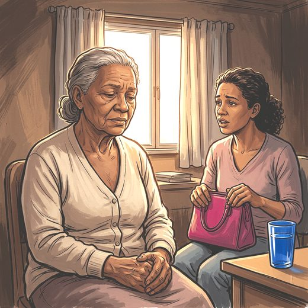

Consulta rápida à beira do leito
Condutas, doses e interações.
Referências da aula · 15
- Kok RM, Reynolds CF 3rd. Management of depression in older adults: a review. JAMA. 2017;317(20):2114-22. PMID 28535241. doi:10.1001/jama.2017.5706.PubMedDOI
- Lam RW, Kennedy SH, Adams C, Bahji A, Beaulieu S, Bhat V, et al. Canadian Network for Mood and Anxiety Treatments (CANMAT) 2023 update on clinical guidelines for management of major depressive disorder in adults. Can J Psychiatry. 2024;69(9):641-87. PMID 38711351. doi:10.1177/07067437241245384.PubMedDOI
- Cuijpers P, Karyotaki E, Pot AM, Park M, Reynolds CF 3rd. Managing depression in older age: psychological interventions. Maturitas. 2014;79(2):160-9. PMID 24973043. doi:10.1016/j.maturitas.2014.05.027.PubMedDOI
- Orgeta V, Leung P, Del-Pino-Casado R, Qazi A, Orrell M, Spector AE, et al. Psychological treatments for depression and anxiety in dementia and mild cognitive impairment. Cochrane Database Syst Rev. 2022;4:CD009125. PMID 35466396. doi:10.1002/14651858.CD009125.pub3.PubMedDOI
- Noetel M, Sanders T, Gallardo-Gómez D, Taylor P, Del Pozo Cruz B, van den Hoek D, et al. Effect of exercise for depression: systematic review and network meta-analysis of randomised controlled trials. BMJ. 2024;384:e075847. PMID 38355154. doi:10.1136/bmj-2023-075847.PubMedDOI
- Bull FC, Al-Ansari SS, Biddle S, Borodulin K, Buman MP, Cardon G, et al. World Health Organization 2020 guidelines on physical activity and sedentary behaviour. Br J Sports Med. 2020;54(24):1451-62. PMID 33239350. doi:10.1136/bjsports-2020-102955.PubMedDOI
- Montero-Odasso M, van der Velde N, Martin FC, Petrovic M, Tan MP, Ryg J, et al. World guidelines for falls prevention and management for older adults: a global initiative. Age Ageing. 2022;51(9):afac205. PMID 36178003. doi:10.1093/ageing/afac205.PubMedDOI
- Riemann D, Espie CA, Altena E, Arnardottir ES, Baglioni C, Bassetti CLA, et al. The European Insomnia Guideline: an update on the diagnosis and treatment of insomnia 2023. J Sleep Res. 2023;32(6):e14035. PMID 38016484. doi:10.1111/jsr.14035.PubMedDOI
- Edinger JD, Arnedt JT, Bertisch SM, Carney CE, Harrington JJ, Lichstein KL, et al. Behavioral and psychological treatments for chronic insomnia disorder in adults: an American Academy of Sleep Medicine clinical practice guideline. J Clin Sleep Med. 2021;17(2):255-62. PMID 33164742. doi:10.5664/jcsm.8986.PubMedDOI
- Irwin MR, Carrillo C, Sadeghi N, Bjurstrom MF, Breen EC, Olmstead R. Prevention of incident and recurrent major depression in older adults with insomnia: a randomized clinical trial. JAMA Psychiatry. 2022;79(1):33-41. PMID 34817561. doi:10.1001/jamapsychiatry.2021.3422.PubMedDOI
- Lieverse R, Van Someren EJW, Nielen MMA, Uitdehaag BMJ, Smit JH, Hoogendijk WJG. Bright light treatment in elderly patients with nonseasonal major depressive disorder: a randomized placebo-controlled trial. Arch Gen Psychiatry. 2011;68(1):61-70. PMID 21199966. doi:10.1001/archgenpsychiatry.2010.183.PubMedDOI
- Perera S, Eisen R, Bhatt M, Bhatnagar N, de Souza R, Thabane L, et al. Light therapy for non-seasonal depression: systematic review and meta-analysis. BJPsych Open. 2016;2(2):116-26. PMID 27703764. doi:10.1192/bjpo.bp.115.001610.PubMedDOI
- Livingston G, Huntley J, Liu KY, Costafreda SG, Selbæk G, Alladi S, et al. Dementia prevention, intervention, and care: 2024 report of the Lancet standing Commission. Lancet. 2024;404(10452):572-628. PMID 39096926. doi:10.1016/S0140-6736(24)01296-0.PubMedDOI
- Fakoya OA, McCorry NK, Donnelly M. Loneliness and social isolation interventions for older adults: a scoping review of reviews. BMC Public Health. 2020;20:129. PMID 32054474. doi:10.1186/s12889-020-8251-6.PubMedDOI
- 2023 American Geriatrics Society Beers Criteria® Update Expert Panel. American Geriatrics Society 2023 updated AGS Beers Criteria® for potentially inappropriate medication use in older adults. J Am Geriatr Soc. 2023;71(7):2052-81. PMID 37139824. doi:10.1111/jgs.18372.PubMedDOI
Documentos oficiais
Leis e publicações do Ministério da Saúde sobre o cuidado da pessoa idosa, de acesso livre.
Abrir os documentos